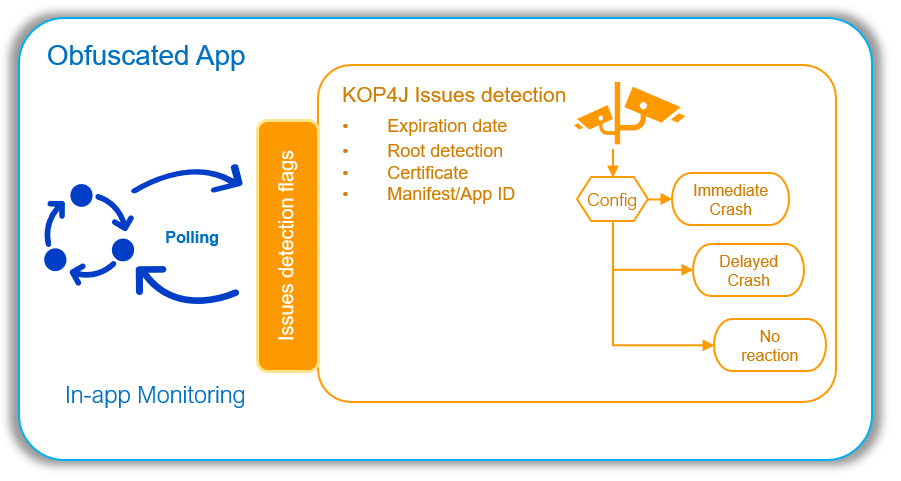

In-App Monitoring
General description
For environment checks, KOP4J provides different reactions: an immediate crash, a delayed crash or no reaction at all.
With in-App monitoring, KOP4J allows the application to implement its own reaction.
The application can define a variable passed in parameter to the check. KOP4J will then update this variable during the several checks.
With this mechanism, the application can monitor at runtime, whether the check has been executed, and its result.
It can then implement a dedicated reaction depending on the result.

The app developer has the possibility to define different combinations of reaction implemented by the KOP4J protection or the application.
| In-app \ KOP4J | Immediate | Delayed | No Reaction |
|---|---|---|---|
| No Reaction | Critical | Critical | Log Only |
| Polling | NA | Mixed | Managed |
Protection Configuration
Protections (without environment check)
Environment checks commands support a statusField option that provides information about the status of the check.
This field MUST be static and of primitive type int.
The status is given as a bit field with following masks:
| Mask Binary | Mask Hexa | Signification |
|---|---|---|
| 00000001b | 0x01 | the check is currently running |
| 00000010b | 0x02 | check has been done at least one time |
| 00000100b | 0x04 | the last check is ok |
| 00001000b | 0x08 | all checks done were ok. |
After a check, if no issues happens, the bit field should be at 00001110b or 0x0E
Example
-kop-check-certificate,delayed,statusField:package.name.Main.certificateStatusBitField public class package.name.Main { public static void main(...); }
-kop-shelf-life-check,no-reaction,date:2020-06-06,statusField:package.name.Main.dateStatusBitField public class package.name.Main { public static void main(...); }
will inject 2 checks :
- on certificate : if it fails, result to an immediate failure. Otherwise the
certificateStatusBitFieldvalue will be0x0Eafter the check, indicating the check as been done at least one time and is ok. - on date : without reaction strategy, indicating the date didn't pass the 6 june 2020 if the
dateStatusBitFieldvalue is equal to0x02(check has been done at least one time and has failed), otherwise its value will be0x0E(check has been done at least one time and is ok).
These fields must exist in appropriate class :
In Java
public class Main {
public static int certificateStatusBitField = 0;
public static int dateStatusBitField = 0;
public static void main(String[] args) {
// Print status values in hex
System.out.println("certificateStatusBitField : 0x"
+ Integer.toHexString(certificateStatusBitField));
System.out.println("dateStatusBitField : 0x"
+ Integer.toHexString(dateStatusBitField));
// ...
}
// ...
}
In Kotlin
class KotlinMain {
companion object {
@JvmField var certificateStatusBitField = 0
@JvmField var dateStatusBitField = 0
}
fun main(args : Array<String>) {
println("certificateStatusBitField : 0x"
+ Integer.toHexString(certificateStatusBitField))
println("dateStatusBitField : 0x"
+ Integer.toHexString(dateStatusBitField))
// ...
}
}
Protection using environment checks
When using this protection with the environment check (Root/Frida/Exposed detection), there are some additional information:
| Mask Binary | Mask Hexa | Signification |
|---|---|---|
| 00000001b | 0x01 | the check is currently running |
| 00000010b | 0x02 | check has been done at least one time |
| 00000100b | 0x04 | the last check is ok |
| 00001000b | 0x08 | all checks done were ok. |
| 00010000b | 0x10 | Root is detected. |
| 00100000b | 0x20 | Frida is detected. |
| 01000000b | 0x40 | XPosed is detected. |
| 10000000b | 0x80 | an Emulator is detected. |
Example
-kop-check-exe-context,immediate,statusField:package.name.Main.contextStatusBitField public class package.name.Main { public static void main(...); }
will inject 1 composite check :
- on Root, Frida, Xposed : if it fails, results to an immediate failure. Otherwise the
contextStatusBitFieldvalue will be0x0Eafter the check, indicating the check as been done at least one time and is ok.